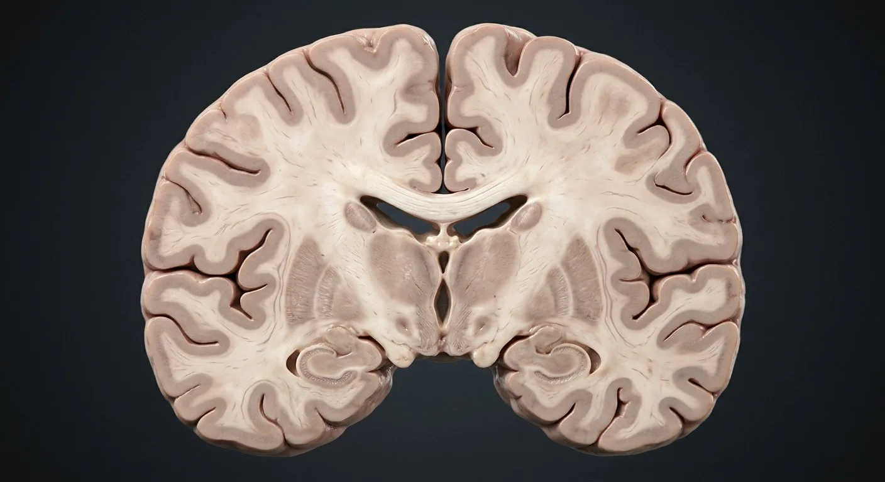
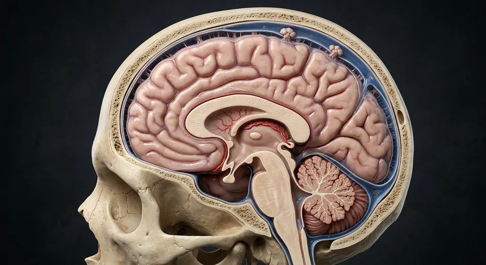
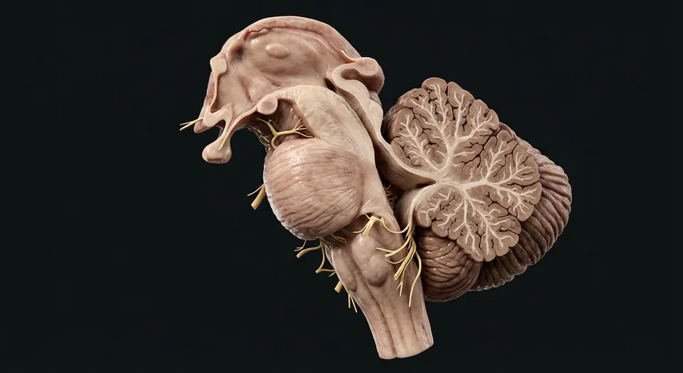
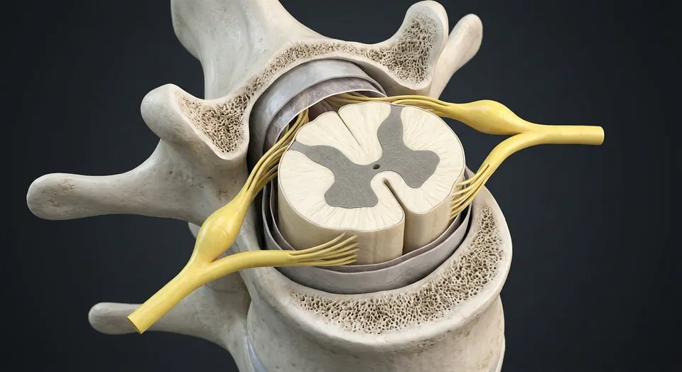

How this part of the body works
Most cerebral neocortex has six microscopic layers, but cortical areas and older hippocampal cortex differ. Beneath cortical gray matter, association fibers link areas within a hemisphere, commissural fibers cross hemispheres and projection fibers connect cortex with deeper structures. The internal capsule carries densely packed motor and sensory pathways between thalamus/basal nuclei. The caudate and putamen form dorsal striatum; globus pallidus, subthalamic nucleus and substantia nigra participate in motor circuits. The thalamus relays and modulates most sensory streams and important motor signals.
Read the anatomy, part by part
These 19 structures correspond to the chapter’s regional illustration or schematic. Each entry separates location, function and a clinical point.
Cortical gray matter
Neuronal cell-body sheet folded into gyri and sulci.
What it doesIntegrates sensory, motor and association information.
Clinical connectionRegional cortical lesions give different deficits.
Layer I · molecular
Superficial neuropil-rich layer below pia, with relatively few neuronal somata.
What it doesSupports horizontal intracortical connections.
Clinical connectionSix-layer plan is a template, not identical in every area.
Layer II · external granular
Small pyramidal and granule-cell zone.
What it doesContributes intracortical signaling.
Clinical connectionCell density varies across sensory and motor cortex.
Layer III · external pyramidal
Pyramidal neurons send many corticocortical and callosal projections.
What it doesLinks cortical regions and hemispheres.
Clinical connectionWhite-matter injury can disconnect otherwise intact cortex.
Layer IV · internal granular
Prominent thalamic input layer, particularly in primary sensory cortex.
What it doesReceives major thalamocortical afferents.
Clinical connectionRelatively thin in primary motor cortex.
Layer V · internal pyramidal
Large pyramidal cells project to brainstem and spinal cord; Betz cells are an example.
What it doesProvides major descending cortical output.
Clinical connectionMotor-pathway injury can cause contralateral weakness.
Layer VI · multiform
Deep layer adjoining white matter, with corticothalamic neurons.
What it doesFeeds back to thalamic circuits.
Clinical connectionNot a standalone boundary visible in gross anatomy.
Subcortical white matter
Myelinated association, commissural and projection fibers beneath cortex.
What it doesConnects distributed gray-matter networks.
Clinical connectionSmall deep infarcts can interrupt multiple pathways.
Corpus callosum
Major interhemispheric white-matter bridge above lateral ventricles.
What it doesCoordinates homologous and heterologous cortical areas.
Clinical connectionCallosal injury may cause disconnection syndromes.
Internal capsule
Compact fiber sheet between caudate/thalamus medially and lentiform nucleus laterally.
What it doesCarries ascending and descending cortical projections.
Clinical connectionSmall perforator stroke may produce dense deficits.
Caudate nucleus
C-shaped nucleus closely following lateral ventricle.
What it doesWith putamen forms dorsal striatum.
Clinical connectionStriatal disease can alter movement and cognition.
Putamen
Lateral striatal nucleus adjacent to globus pallidus.
What it doesReceives cortical input for motor and associative loops.
Clinical connectionDeep perforator disease may involve putamen.
Globus pallidus
Medial lentiform nucleus divided into external and internal segments.
What it doesInternal segment contributes major basal-ganglia output.
Clinical connectionCircuit imbalance affects initiation and suppression of movement.
Subthalamic nucleus
Diencephalic nucleus below thalamus with excitatory projections toward pallidal output.
What it doesModulates basal-ganglia movement circuit.
Clinical connectionFocal lesion can cause contralateral hemiballismus.
Thalamus
Paired deep gray-matter nuclei flanking third ventricle.
What it doesRoutes selected sensory and motor signals toward cortex.
Clinical connectionOlfaction is a notable exception to the usual initial sensory relay.
Hippocampal formation
Medial temporal folded cortex with fewer layers than typical neocortex.
What it doesParticipates in memory encoding and spatial processing.
Clinical connectionBilateral injury can cause profound anterograde memory impairment.
Lateral ventricle
Paired curved ventricular cavities beneath corpus callosum.
What it doesConduct CSF toward foramina of Monro.
Clinical connectionIts walls give landmarks for caudate and thalamus.
Primary motor cortex
Precentral gyrus of frontal lobe, largely Brodmann area 4.
What it doesContributes voluntary movement commands.
Clinical connectionContralateral motor loss follows focal injury.
Primary somatosensory cortex
Postcentral gyrus of parietal lobe, chiefly areas 3, 1 and 2.
What it doesProcesses body somatic sensory information.
Clinical connectionContralateral discriminative sensory deficits may occur.
Deeper structures and tissue layers
These 1 additional entries give anatomical context. They are deliberately not assigned a photographic pin on the regional image.
External capsule
Thin white-matter sheet lateral to putamen and medial to claustrum.
What it doesCarries association and corticocortical fibers.
Clinical connectionDistinct from the internal capsule near thalamus.
Five questions about Cerebrum · cortex & deep pathways
Short answers grounded in the structures described above. Use the illustrated guide for anatomical context.
What lies beneath the cerebral cortex?
Deep white-matter pathways connect cortical regions with each other and with subcortical structures, while deep gray nuclei and ventricles occupy related spaces.
Does every part of the cerebral cortex have six layers?
Most neocortex has six layers, but cortical regions vary, and older cortical areas such as hippocampal cortex have a different laminar organization.
What is the cortical gray matter?
Neuronal cell-body sheet folded into gyri and sulci. Function: Integrates sensory, motor and association information.
Where is the layer II · external granular located?
Small pyramidal and granule-cell zone. Function: Contributes intracortical signaling.
What is the function of the layer IV · internal granular?
Function: Receives major thalamocortical afferents. Prominent thalamic input layer, particularly in primary sensory cortex.
Related anatomy guides
Follow these connected structures and body systems in the illustrated atlas.
 BrainMidsagittal section: cerebrum, diencephalon, brainstem and cerebellum around the ventricular system.↗
BrainMidsagittal section: cerebrum, diencephalon, brainstem and cerebellum around the ventricular system.↗
Meninges, CSF & venous sinusesFollow dura, arachnoid and pia; then CSF from choroid plexus to subarachnoid drainage.↗
Brainstem & cerebellar circuitryLocate brainstem levels, cranial-nerve nuclei, pyramids and cerebellar peduncles, cortex and nuclei.↗
Spinal cordCross-section: a grey butterfly inside white tracts, wrapped in three meninges.↗Further reading
General anatomy references and related source chapters for continued study. These links do not make the digital illustrations clinical images or certify every anatomical variant.
This educational material does not provide medical advice, diagnosis or treatment. A named clinical reviewer has not been claimed for this page.
Open the interactive plate, pins, animated schematic and self-test.